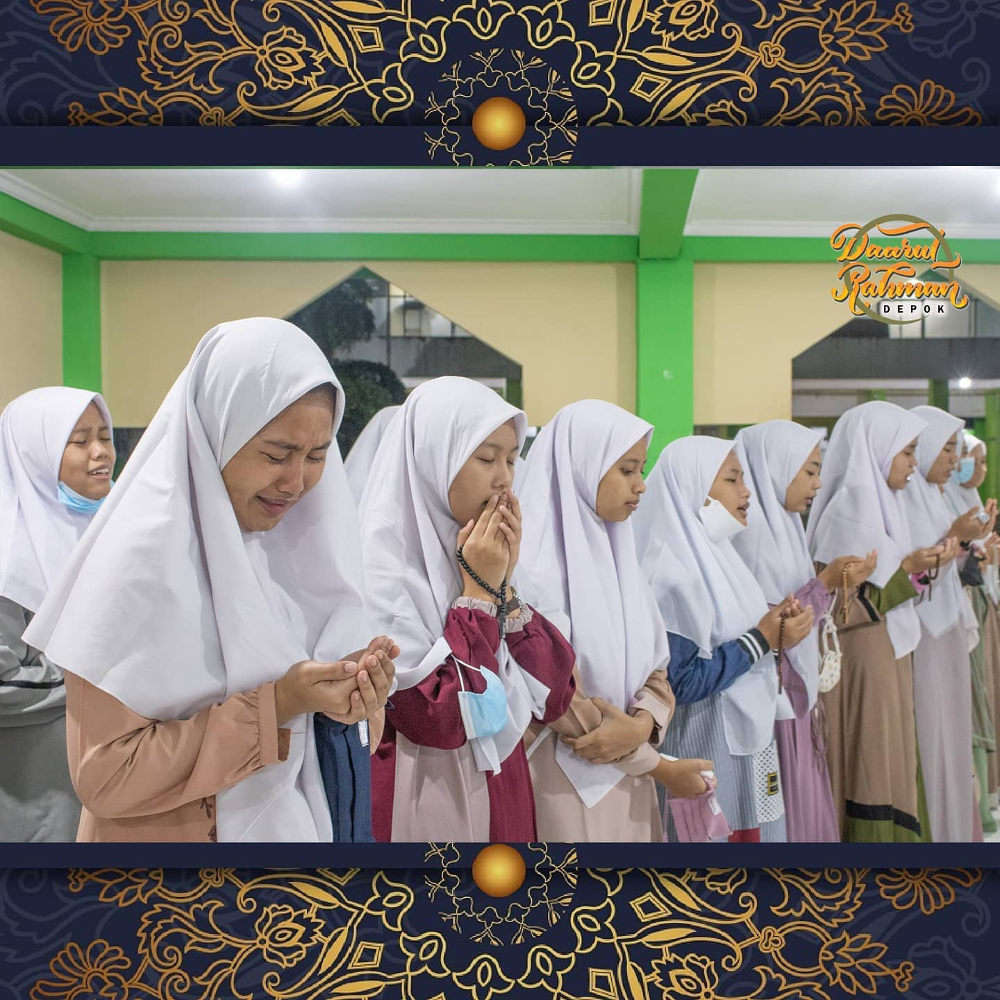
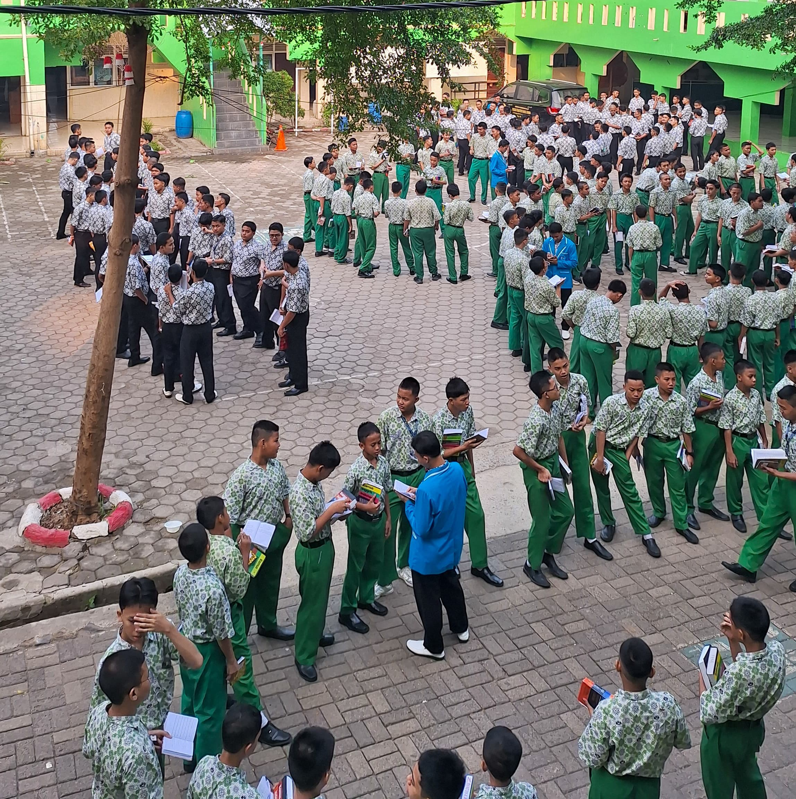

Kegiatan dan Fasilitas Santri

Gedung Putri
Asrama Putri beserta Ruang Kelas dan Toilet serta Lapangan Putri

Ruang Kelas Putra
Ruang Kelas Putra serta Masjid Al-Hafizh

Upacara Mingguan
Upacara kenaikan Bendera Merah Putih yang diadakan setiap 2 minggu sekali.

Pembacaan Maulid
Pembacaan Maulid Barzanji yang diadakan rutin setiap malam jumat

Muhadatsah
Muhadatsah yang diadakan 2 hari sekali setiap pagi sebelum melakukan kegiatan belajar dikelas